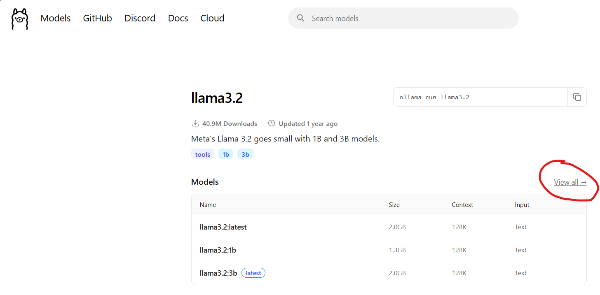

library(readr)
library(dplyr)
library(glue)
library(ragnar)
library(rollama)
# Récupérer tous les chemins des fichiers PDF dans le dossier "files"
pdf_paths <- list.files(
path = "D:/Ma bibliothèque/files/",
pattern = "\\.pdf",
full.names = TRUE,
recursive = TRUE)
# Récupérer les liens dans le fichier .csv
zotero_csv <- read_csv2("D:/ma_biblio_csv.csv") %>%
filter(!is.na(Url) | !is.na(`Link Attachments`) )
zotero_urls <- zotero_csv %>%
select(Url, `Link Attachments`) %>%
unlist() %>%
na.omit() %>%
unique()
# Ragnar permet aussi de récupérer les liens présents sur une page web.
# On peut ainsi récupérer toutes les pages d'une documentation
# à partir du lien de la page d'accueil
zotero_external_links <- c()
for(link in zotero_urls){
tryCatch({
doc <- ragnar_find_links(link, depth = 2)
zotero_external_links <- append(zotero_external_links, doc)
})
}
# On combine le tout pour obtenir un seul vecteur
full_links <- c(pdf_paths, zotero_urls, zotero_external_links) %>%
unique()Créer un assistant de code personnel avec R, {ragnar}, Ollama et Zotero
R
IA
LLM
Entraîner un LLM sur des documents pour se créer un assistant de code local et gratuit, spécialisé dans son domaine d’expertise
Etant plutôt du genre à être dans les derniers à suivre une tendance, mon utilisation des LLM était jusqu’à récemment limitée à poser des questions à chat-GPT ou GitHub Copilot. Il y a environ deux semaines, en discutant avec un ami dont le métier est justement d’accompagner les entreprises dans leur passage à l’IA, celui-ci m’a expliqué les différents mots-clés du domaine : “MCP”, “Agent”, “Contexte” et surtout : la “RAG” (Retrieval-Augmented Generation), ou “Génération Augmentée par Récupération”.
La RAG, c’est faire lire des documents à un LLM pour qu’il puisse les utiliser dans ses réponse. Cela revient à ajouter de nouvelles données (que l’on estime fiables) à sa base d’entraînement et permet d’étendre ses connaissances dans un domaine précis.
Ca tombe bien ! Depuis que j’ai commencé à coder, j’utilise Zotero pour indexer des tonnes de guides et d’articles sur R. L’idée m’est immédiatement venue : créer un assistant de code spécialisé en R et en données de santé.
Zotero, c’est quoi ?
Zotero, c’est un logiciel gratuit qui permet de se créer une bibliothèque composée de différentes pages Web ou documents. En le téléchargeant, on ajoute une extension à son navigateur qui permet d’ajouter le lien de la page visitée à sa bibliothèque, et si la page affiche un document PDF, de le télécharger.
Ma bibliothèque Zotero contient aujourd’hui près d’un millier de documents : des liens vers des livres comme “R for Data Science” d’Hadley Wickham (un classique), des articles de blog, ou des cheatsheets (antisèches) résumant le fonctionnement des principaux packages du Tidyverse, que l’on peut retrouver par exemple ici. Cette bibliothèque est une mine d’or pour moi car elle me permet de retrouver facilement la documentation que j’ai pu parcourir, et sera parfaite pour entraîner un assistant IA.

Ragnar
Ragnar est un package tout récent qui permet de créer un “knowledge store” pour un LLM. Il accepte de nombreux formats : URLs, fichiers textes, PDF, PowerPoint, Word, Excel, images, audio, HTML, CSV, JSON, XML, fichiers ZIP et même des vidéos YouTube.
Tous les documents ingérés sont convertis en markdown et intégrés à un store (une base de données DuckDB) que l’on mettra à disposition du LLM.
Ragnar permet seulement de créer le store et de l’utiliser. Il faudra ensuite utiliser {ellmer} pour discuter avec notre assistant.
Quel modèle choisir ?
Ragnar fonctionne avec différents fournisseurs d’IA, dont OpenAI (ChatGPT), mais notre objectif est ici de se créer un assistant local et gratuit, on se tournera donc plutôt vers Ollama.
Ollama est une plateforme qui met à disposition des modèles de LLM gratuits et téléchargeables en local. Ces modèles sont évidemment moins puissants que ChatGPT ou Claude, mais ce n’est pas très grave puisque l’on va entraîner le notre sur des données qui seront pertinentes pour nous.
Pour cet exemple, j’ai choisi le modèle llama3.2:3b-instruct-q4_K_M.
Caution
Tous les modèles présents sur Ollama ne sont pas compatibles avec la RAG, il faut choisir une variante “-instruct”. Pour cela, une fois votre modèle choisi, cliquez sur “View all” pour voir toutes les variantes du modèles, et choisissez un “-instruct”.
A noter que tous les modèles “-instruct” ne sont pas nécéssairement compatibles. Il vous faudra tester différents modèles si vous souhaitez un autre que celui dans cet exemple.
(Si vous en trouvez un très bon, n’hésitez pas à me contacter pour m’en faire part !)

Ellmer
Ellmer est un package R du Tidyverse et développé par Hadley Wickham (encore lui), qui permet de discuter avec différents LLMs depuis R. On utilisera sa fonction chat_ollama() pour discuter avec notre assistant.
Créér son assistant
Maintenant que l’on a tous les ingrédients, on peut commencer à se mettre au travail.
Récupérer les documents
Tout d’abord, commençons par extraire notre bibliothèque Zotero. On aura besoin des PDFs déjà récupérés et des URLs des pages enregistrées.
Pour les PDFs, une fois dans Zotero allez dans Fichier > Exporter la bibliothèque > Format : “Zotero RDF” et cochez “Exporter les fichiers”. Vous obtiendrez ainsi un dossier “Ma bibliothèque”, qui contient un sous-dossier “files”, qui contient les PDFs, et un fichier “Ma bibliothèque.rdf” que nous n’utiliserons pas.
Pour obtenir les URLs, exportez simplement votre bibliothèque au format.csv.
On peut désormais commencer à coder :
Caution
En considérant une moyenne d’une minute par document, il m’a fallu plus de 30 heures pour ingérer ma bibliothèque qui en contient près d’un millier. Pour faire cette expérience de votre côté, vous pouvez tester avec seulement la documentation du package {rhino} en remplaçant full_links par ce lien : “https://appsilon.github.io/rhino/articles/tutorial/create-your-first-rhino-app.html”
Créer le store
Le store est une base DuckDB qui contiendra nos documents, découpés en chunks, pour permettre à l’assistant d’y accéder.
# Si on ne met que le nom, enregistré sous C:/user/votre_nom/ (sur Windows)
store_location <- "zotero_ragnar.duckdb"
# Créer le store
store <- ragnar_store_create(
store_location,
embed = \(x) ragnar::embed_ollama(x, model = "llama3.2:3b-instruct-q4_K_M"),
overwrite = TRUE
)
# S'y connecter
store <- ragnar_store_connect("zotero_ragnar.duckdb", read_only = FALSE)Ingérer les documents dans le store
Maintenant que le store est créé, on va enregistrer nos documents via une boucle. read_as_markdown() permet de transformer le document (URL, PDF ou autre) en markdown, puis markdown_chunk() permet de le découper en chunks pour que le LLM puisse l’exploiter.
Caution
Lorsqu’une URL est fournie, {ragnar} va scraper la page. Certains sites n’autorisent pas le webscraping (c’est leur droit) et vous renverront une erreur 403. Dans ce cas, il n’y a pas grand chose à faire. On ajoutera un tryCatch() à notre boucle pour ne pas la casser si une erreur est renvoyée.
for (path in full_links) {
tryCatch({
chunks <- path |>
read_as_markdown() |>
markdown_chunk()
ragnar_store_insert(store, chunks)
# pour visualiser la progression
print(which(path == full_links), "/", length(full_links))
}, error = function(e) {
cat("Error processing", path, ":", e$message, "\n")
})
}
# Créer un index de recherche pour les chunks
# Indispensable pour rendre notre store exploitable
ragnar_store_build_index(store)
# On peut ensuite vérifier la bonne intégration des documents avec
ragnar_store_inspect(store)Préparer l’assistant
Nous allons tester notre assistant en lui demandant de nous aider à utiliser le framework {rhino}, développé par Appsilon pour créer des applications R/Shiny robustes.
# Notre Query
text <- "How to use the {Rhino} R package to create a Shiny app ? Be concise"
# On peut visualiser les chunks les plus pertinents pour notre question avec
relevant_chunks <- ragnar_retrieve(store, text)
# Définir un prompt de préparation
# il sera possible d'enregistrer ce prompt dans un .Rprofile pour ne pas avoir à le répéter
system_prompt <- stringr::str_squish(
"
You are an expert R programmer and mentor. You are concise.
Before responding, retrieve relevant material from the knowledge store. Quote or
paraphrase passages, clearly marking your own words versus the source. Provide a
working link for every source cited, as well as any additional relevant links.
Do not answer unless you have retrieved and cited a source.
"
)Discuter avec l’assistant
On va tout d’abord tester notre assistant, pour voir s’il connait le package {rhino} :
chat <- ellmer::chat_ollama(
system_prompt,
model = "llama3.2:3b-instruct-q4_K_M"
)
chat$chat(text)
# I'm unable to retrieve accurate information regarding the "{Rhino}" R package without more context. However, I can provide general guidance on creating a Shiny app using the Shiny package in R.
#
# To start building a Shiny app:
#
# 1. Install and load the `shiny` package:
#
# ``` r
# install.packages("shiny")
# library(shiny)
# ....Pour le moment, il est incapable de répondre.
On va maintenant lui donner accès au store :
ragnar_register_tool_retrieve(chat, store)
chat$chat(text)
# ◯ \[tool call\] rag_retrieve_from_store_003(text = " installing and loading shiny package") ● #\> \[{"origin":"https://appsilon.github.io/rhino/articles/tutorial/create-your-first-rhino-app.html","doc_id":1,"ch… To create a Shiny app using the Rhino package, follow these steps:
#
# 1. Install Rhino: `package::install("rhino")`
# 2. Create an initial Rhino application: `rhino::init("RhinoApplication")`
#
# Install necessary packages:
#
# ``` r
# # In R console
# rhino::pkg_install(c(
# "dplyr",
# "echarts4r",
# "htmlwidgets",
# "reactable",
# "tidyr"
# ))
# ```
# .....Victoire ! Notre assistant connaît désormais {rhino} et peut nous accompagner pour le développement d’applications Shiny plus poussées !
Il ne reste plus qu’à continuer avec tous les documents de notre bibliothèque pour développer les connaissances de notre assistant.
Notre modèle étant installé en local, l’assistant fonctionne même sans connexion internet, de façon illimitée et gratuite. Si le modèle n’est pas assez performant pour vous, vous pouvez parcourir la liste de modèles Ollama pour en trouver un plus adapté à votre usage.
Tip
- Pour ajouter de nouveaux documents, on peut créer une nouvelle boucle avec
ragnar_store_insert()etragnar_store_build_index(). On passera simplement l’étaperagnar_store_create()pour passer directement àragnar_store_connect() - Pour que l’assistant soit prêt dès le lancement de notre IDE, on peut enregistrer les étapes suivantes dans un .Rprofile
ragnar_store_connect()- Le
system_prompt - La création de
chatavecellmer::chat_ollama()